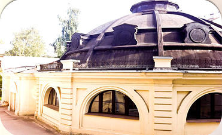

О театре
Санкт-Петербургский государственный академический театр балета имени Леонида Якобсона – уникальный художественный коллектив, являющийся жемчужиной не только Санкт-Петербурга и России, но и всего мирового культурного пространства. Театр гордится своей 50-летней историей и с честью носит имя своего основателя – выдающегося русского хореографа XX века Леонида Вениаминовича Якобсона (1904–1975).
Коллектив был основан 12 ноября 1966 года, приказом Министерства культуры СССР под названием «Хореографические миниатюры». Леонид Якобсон встал во главе театра в 1969 году, и с этого времени у труппы началась новая жизнь.
Леонид Вениаминович Якобсон родился в Санкт-Петербурге, в 1926 году окончил Ленинградское хореографическое училище, был танцовщиком Кировского и Большого театров, но прославился как яркий самобытный хореограф, постоянно ищущий новые выразительные средства и формы. Продолжая традиции Михаила Фокина, он разделял убеждение, что каждый спектакль должен иметь индивидуальное лицо и считал классический танец – только одним (а не главным) выразительным средством в балете. Обладая самобытным мышлением и неисчерпаемой фантазией, он сумел создать свою, особенную танцевальную пластику, расширив стилевые и жанровые возможности классической хореографии. Самые известные и талантливые артисты балета (Наталья Макарова, Михаил Барышников, Алла Осипенко, и Майя Плисецкая) исполняли созданные Леонидом Якобсоном произведения.
В 1976 году, после смерти Якобсона, место художественного руководителя получает его последователь, премьер Кировского театра Аскольд Макаров. Именно в это время в театре появляются постановки зарубежных хореографов, масштабные классические полотна. Коллектив становится известен за пределами СССР.
Сегодня Санкт-Петербургский государственный академический театр балета имени Леонида Якобсона занимает важное место среди сильнейших театральных трупп в России. Его репертуар необычайно богат. В нем сочетаются наследие основателя труппы (легендарный «Спартак», циклы миниатюр «Роден», «Классицизм-Романтизм», «Жанровые зарисовки», одноактный балет «Свадебный кортеж»), классические спектакли («Жизель», «Лебединое озеро», «Щелкунчик», «Пахита», «Шопениана», «Спящая красавица», «Дон Кихот») и современные работы (вечер одноактных балетов «Лики современной хореографии», балеты «Ромео и Джульетта», «Каменный берег», «Репетиция», «Жар-птица», «Пиковая дама» ).
С 2011 года художественным руководителем театра является Заслуженный артист России Андриан Фадеев. Своей главной задачей на этом посту он видит работу по сохранению, продолжению и развитию традиций, заложенных за все время истории коллектива. Сегодня в театре работают воспитанники лучших хореографических школ и опытные педагоги, объединенные стремлением хранить шедевры прошлого и создавать новое. Театр активно гастролирует. Постоянно обновляется художественное оформление. Сегодня публика по всему миру имеет возможность насладиться классическими постановками русского балета в обрамлении костюмов и декораций, созданных современными российскими художниками-постановщиками. Труппа является лауреатом Высшей театральной премии Санкт-Петербурга «Золотой софит», Российской национальной театральной премии «Золотая маска» и престижной европейской балетной Премии Тальони.